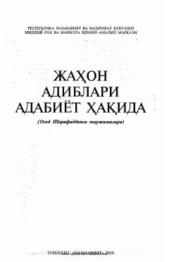

JAJahon adabiyoti namoyandalarining adabiyot va ijod sirlari haqidagi qimmatli fikrlari to'plami.
Ushbu to'plam jahon adabiyotining yirik namoyandalari, jumladan Lev Tolstoy, Onore de Balzak va German Hesse kabi yozuvchilarning adabiyot tabiati, ijod sirlari va estetik qarashlari haqidagi asarlarini o'z ichiga oladi. Asarlar O'zbekiston Qahramoni Ozod Sharafiddinov tomonidan o'zbek tiliga tarjima qilingan bo'lib, kitobxonlarning adabiy-estetik didini shakllantirishga xizmat qiladi.